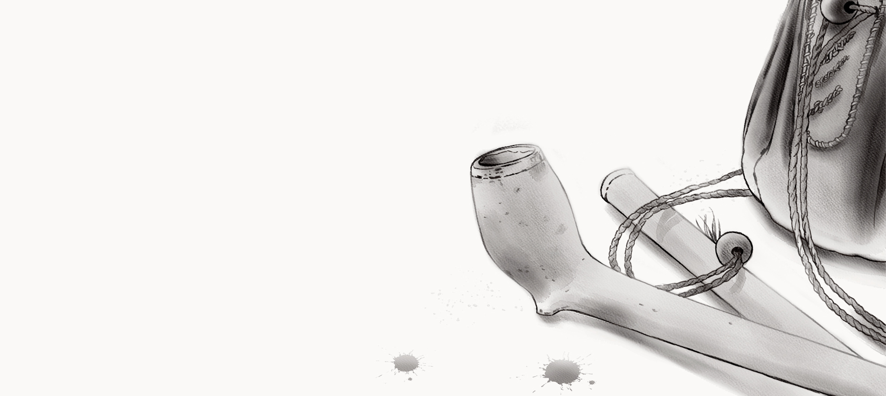

CHIVEY

A man in an elegant hat and a finely cut coat leaned over the forecastle rail. He looked down at the captain and Emmy.
"Captain Jope! Come up! The sight from here would do thy heart good."
The captain and Emmy stood on the deck of the captured ship, where wreckage and chaos surrounded them on all sides as they picked their way over broken spars and yards, tangled heaps of canvas and coils of rope, making their way up to the highest part of the bow.
The man in the finely cut coat swept off his hat and bowed with a flourish. "A fine sea for the work."
Jope returned the gesture. "Fine sea indeed, Captain Elfrith. Let us hope the prize proves equally so." His gaze moved over the captured vessel. "A sorry sight. This hulk is beyond saving."
He swept the debris off a nearby barrel and set his tobacco pouch carefully on top.
"Help yourself, captain," he said, leaning against the rail.
Both captains drew out long clay pipes and began to fill them without hurry. A faint smell of tobacco smoke drifted through the air as they exchanged pleasantries and sent clouds from their lips. Towering above them stood a carved wooden figure that had come through the battle without a scratch — a man in gilded armor, arm raised, driving a spear down into a fallen lion. Emmy reached up and stroked the lion's mane, then laid her palm in its paw.
How beautiful you are. Even defeated.
She moved to the ship's rail and looked down at Captain Jope's ship, which seemed small and vulnerable against the fallen giant. On its bow a lion painted white.
Two lions. One of them won.
She crossed to the other side, where Captain Elfrith's ship looked just as small and vulnerable. Its bow carried a golden lion.
Emmy looked into the face of the wooden warrior.
You defeated the lion. But two lions defeated you...
She went back to the captains and sat down on a crate nearby, listening to their exchange.
"Excellent tobacco, Captain Jope!" Captain Elfrith exhaled a thick stream of white smoke.
He turned his head toward Emmy, his lips curving slightly as his gray eyes narrowed and his gaze grew brighter, wetter, moving slowly over her body. Emmy shrank back and pulled the hem of her shirt down over her knees.
"Fine boy. Strong." He blew smoke in her direction. "He'd make an excellent cabin boy. John, what do you say to a deal?" He moved closer to Captain Jope and put an arm around his shoulders. "A hogshead of Canary wine for the boy."
"A good servant is hard to come by, Daniel." Jope knocked the ash from his pipe. "So no. The boy is mine to keep."
He spat on the deck, pushed his fingers into the tobacco pouch and packed a fresh load into the pipe.
Captain Elfrith beckoned Emmy over with a finger. She looked at Captain Jope, who gave an approving nod, and went obediently to the captains. Well-kept fingers closed firmly around her chin, and a heavy floral scent hit her full in the face, with the faint echo of tobacco somewhere behind it.
He studied Emmy's face, turned her head to one side, then the other. He looked at Jope. Then back at Emmy. Something shifted in his face, his eyebrows shot up.
"Blood of Christ... how did I miss it? Same eyes. Same nose..."
He let out a low whistle. "Is this your bastard?"
Jope's face darkened.
“When? When didst thou manage it? And why did I not know? And yet thou keptst this from me?” Elfrith took a deep drag and blew a stream of smoke straight into Emmy’s face. “So this be what came of that French dockside wench?"
Captain Jope fixed Emmy with a cold stare.
"Get out of here, boy..."
Emmy didn't need to be told twice. She headed quickly for the stairs leading down to the deck. Glancing back, she saw Jope turn to Elfrith, cup his hand around his head and pull him close. The two captains stood facing each other, foreheads pressed together and eyes burning, speaking quietly and tensely as Jope drew Elfrith closer still, his voice low and insistent.
Gripping the handrails, Emmy slid quickly down the ladder to the deck. Sharp splinters scattered across the planks bit into her bare feet, forcing her to shift from one foot to the other.
What did he want? To buy me...? How can one person buy another? That's wrong... completely wrong. And what does he need me for...?
She slipped quietly into the space beneath the overhanging forecastle. Unlike the deck, which was bathed in bright sunlight, a cool semi-darkness reigned here. In the middle of the open area a platform had been built from brick, above which, over the cold ashes, hung an enormous cast iron pot; peering inside, she saw sour slop bubbling at the bottom.
How can anyone live like that...? Disgusting... It's really disgusting.
Emmy sat down on the platform. Bowls, sacks and crates lay scattered around in disorder, and as she slowly sorted through all the junk, her hand found a ship's biscuit.
All of this… This whole world... Disgusting.
She broke off a piece. A fat white grub with a black head fell out from inside. It writhed and waved its tiny legs.
Captain Elfrith...
Emmy ground it flat with the biscuit. She stood up and brushed the crumbs from her clothes, then took a step toward the bright sunlight.
The main deck met her with drowsy calm. Two dozen or so prisoners moved around the solitary mast. They cleared the wreckage of broken spars, yards and tangled rope, heaving it all over the side.
Some were tearing tarred canvas and planking from the main hatchway. Armed sailors with muskets strolled around them at their ease. Emmy moved closer to the mast and studied the prisoners' faces — long wavy black hair, sharp mustaches and trimmed beards framed their lean faces, thin noses jutting forward like the beak of a bird of prey.
They're... beautiful.
She picked up a length of frayed rope from the deck and, swinging it like a whip, wandered across the boards, knocking thick layers of splinters away. A small tin crucifix on a leather cord caught her eye; when she picked it up, she saw a crudely cast figure of Christ hanging limply on the cross.
Emmy put the crucifix on and straightened it on her chest.
"Move aside, you're in the way," one of the armed sailors nudged her to the side.
Something touched her leg.
"Ajude-me! Por amor de Deus, me ajude!" A trembling hand touched her again. She looked down to find a captured sailor lying at her feet. His splayed fingers clutched at a ragged wound in his stomach, as though trying to hold his body together.
His eyes found her face and fixed there.
"Ajude-me... me ajude..."
The rasping whisper repeated its unintelligible words, slowly fading.
Emmy recoiled. Her foot caught on a body behind her and she fell hard onto her back into a carpet of moving flesh. She felt someone else's breath on her cheek. Slow and uneven.
Breathe in, breathe out... Breathe in, breathe out...
Emmy turned her head toward the breath.
Beside her, face to face, lay a small boy. Against clothing blackened with blood, his pale skin was almost transparent.
Like a pale fish on black sand...
His eyelids trembled, and his long lashes brushed away the moisture; his gaze wandered across her face, unable to focus.
"Mãe... Minha mãe..."
His blue-tinged lips kept moving. Every so often his mouth fell open wide, gulping at the air.
"Minha mãe..."
He placed Emmy's hand on his chest. His fingers found the tin crucifix. They closed around it tightly. His hand trembled — and the boy rolled his eyes back.
Emmy screamed. She shoved him away with both hands. The cord snapped, the crucifix stayed in the boy's fist. Twisting her whole body, she pulled free from the pile of bodies. Her hands slid on slick blood. She scrambled to her feet and lurched sideways, but the wet deck planks stopped her.
She lost her balance and fell, sliding down the ladder steps to the lower deck. Her head struck a step hard and everything went dark.
Mama... Mama...
A soft wave carried her somewhere far away. Her head throbbed as Emmy opened her eyes a crack to see bright sunlight falling on the white tile floor of a hospital corridor. She let out a breath of relief.
What a strange dream…
She closed her eyes. Someone kicked her roughly in the shoulder.
"Move, whelp."
She startled, eyes flying open, as someone stepped over her without ceremony and heavy footsteps tramped up the wooden stairs. Sunlight fell at a slant through the gun ports, lighting the dim space of the gun deck in rows. It slid along the cannon barrels, catching swirls of ship dust. It smelled of mustiness, dirty socks, and something else entirely unfamiliar, cloyingly sweet and heavy: the smell of bodies that had gone past saving.
Emmy got to her feet, pushing herself up against the steps. She took a few unsteady steps into the gun deck. She looked around and saw dozens of sailors from both ships ranging through the space in search of plunder, digging through chests and crates and prying open barrels.
Fragments of cursing and disappointed shouts reached Emmy from all sides as she crept along the hull, skirting the cannons and moving deeper into the belly of the ship while doing her best to stay out of sight of the disgruntled sailors. Passing through a band of sunlight, she slipped into the shadow and sat down on the floor.
A chain rattled behind her. Emmy turned. Two pairs of eyes looked at her from blue-black faces, a gaunt black woman holding an equally thin girl of about eight pressed close to her. The woman’s face and body were covered in a pattern of raised scars, and her coarse curly hair had matted into a shapeless mass. She opened her mouth and pointed into it with her finger.
" Nzola maza... Vana maza, mono..."
Teeth filed to points showed white in her mouth.
" Maza! Maza…"
She grabbed Emmy by the shoulder. Emmy pushed her hand away, but the woman opened her mouth again, jabbing her finger toward it.
" Maza... Nzola maza..."
Chains rattled as many black hands reached out in supplication.
" Maza... Maza..."
Emmy backed away. She turned toward the exit and ran.
Something stopped her halfway to the hatch.
Sunlight pulled a familiar face from the shadows. Two feet above her, near the deckhead, hung a cage. It swayed with the movement of the deck. Wide bands of metal wrapped tight around the body of a black man. He sat like a bird on a perch, his head hanging down. Emmy looked closely at his face.
Chad?
A pair of wild eyes fixed on her. The man stirred. He reached out through the bars and stroked Emmy's cheek. His lips moved, shaping wet, meaningless sounds. His mouth was an open bleeding wound.
A wave of scalding nausea rose inside Emmy, but she forced it down and ran up the ladder and out onto the main deck. She dropped to her knees and gasped for air.
The contents of her stomach hit the deck in a greenish pool.
What the hell...? Forgive me Lord... but what was that...? This can't be real. It can't be... Wake up. Wake up... Come on, wake up already!
Leaning against the bulwark, she hauled herself to her feet and seized the rail in a death grip, arms spread wide. Her knuckles went white as she pressed her chest against the wooden railing and looked down at the narrow strip of churning water below. The sides of the ships rose and fell out of time with each other.
Oh no, that's no better at all. Even worse, so much worse... Away from here, get away...
Emmy shoved herself off the rail and staggered along the deck, swaying from side to side. The sunlight grew brighter and brighter until it swallowed everything around her. She reached her hand forward, through the light, and met a wall painted evenly in white. Pressing her back against it, she let out a breath of relief — through the light the familiar outlines of the hospital corridor took shape. Dr. Harper still stood at the reception desk, talking with the nurses, patients still drifted peacefully along the corridor.
"Dr. Harper!" Emmy stepped toward the desk.
A sharp pain spread through her stomach, she took a few steps and dropped to her hands and knees. Her palms found the weathered wet planks of the deck, a salt breeze off the sea pulled at her tangled hair.
Somewhere high above, the mast creaked, whispering:
You are here, here... You will always be here...
Emmy's shoulders trembled and she began to cry quietly.